Using MachineShop
Melanoma Example
The package is illustrated in the following sections with an overall survival analysis example in which the response variable is a time to event outcome. Since survival outcomes are a combination of numerical (time to event) and categorical (event) variables, package features for both variable types will be utilized in the example. Outcomes other than survival, including nominal and ordinal factors as well as numeric vectors and matrices, are supported by MachineShop and will be discussed.
Survival analysis is performed with the Melanoma dataset from the MASS package (Andersen et al. 1993). This dataset provides survival time, in days, from disease treatment to (1) death from disease, (2) alive at end of study, or (3) death from other causes for 205 Denmark patients with malignant melanomas. Also provided are potential predictors of the survival outcomes. The analysis begins by loading required packages MachineShop, survival, and MASS as well as magrittr (Bache and Wickham 2014) for its pipe (%>%) operator to simplify some of the code syntax. For the analysis, a binary overall survival outcome is created by combining the two death categories (1 and 3) into one. The dataset is then split into a training set on which a survival model will be fit and a test set on which predictions will be made. A global formula surv_fo is defined to relate the predictors on the right hand side to the overall survival outcome on the left and will be used in all of the survival models in this vignette.
## Analysis libraries
library(MachineShop)
library(survival)
library(MASS)
library(magrittr)
## Malignant melanoma analysis dataset
surv_df <- within(Melanoma, status <- as.numeric(status != 2))| Characteristic | Value |
|---|---|
| Number of subjects | 205 |
| time | |
| Median (Range) | 2005 (10, 5565) |
| status | |
| 1 = Dead | 71 (34.63%) |
| 0 = Alive | 134 (65.37%) |
| sex | |
| 1 = Male | 79 (38.54%) |
| 0 = Female | 126 (61.46%) |
| age | |
| Median (Range) | 54 (4, 95) |
| year | |
| Median (Range) | 1970 (1962, 1977) |
| thickness | |
| Median (Range) | 1.94 (0.1, 17.42) |
| ulcer | |
| 1 = Presence | 90 (43.9%) |
| 0 = Absence | 115 (56.1%) |

## Training and test sets
set.seed(123)
train_indices <- sample(nrow(surv_df), nrow(surv_df) * 2 / 3)
surv_train <- surv_df[train_indices, ]
surv_test <- surv_df[-train_indices, ]
## Global formula for the analysis
surv_fo <- Surv(time, status) ~ sex + age + year + thickness + ulcerModel Fit and Prediction
Model fitting requires user specification of an available model. A named list of MachineShop models can be obtained interactively with the modelinfo function, and includes a descriptive "label", the source "packages" on which the models depend, supported response variable "types", and "arguments" that can be specified in calls to the model functions. Note that in order to use a model the source packages must be installed with the install.packages or equivalent function, but need not be loaded with the library function. Function modelinfo can be called with one or more model functions, function names, function calls, or observed response variables; and will return information on all models matching the calling arguments.
## All available models
modelinfo() %>% names
#> [1] "AdaBagModel" "AdaBoostModel" "BARTModel"
#> [4] "BARTMachineModel" "BlackBoostModel" "C50Model"
#> [7] "CForestModel" "CoxModel" "CoxStepAICModel"
#> [10] "EarthModel" "FDAModel" "GAMBoostModel"
#> [13] "GBMModel" "GLMBoostModel" "GLMModel"
#> [16] "GLMStepAICModel" "GLMNetModel" "KNNModel"
#> [19] "LARSModel" "LDAModel" "LMModel"
#> [22] "MDAModel" "NaiveBayesModel" "NNetModel"
#> [25] "PDAModel" "PLSModel" "POLRModel"
#> [28] "QDAModel" "RandomForestModel" "RangerModel"
#> [31] "RPartModel" "StackedModel" "SuperModel"
#> [34] "SurvRegModel" "SurvRegStepAICModel" "SVMModel"
#> [37] "SVMANOVAModel" "SVMBesselModel" "SVMLaplaceModel"
#> [40] "SVMLinearModel" "SVMPolyModel" "SVMRadialModel"
#> [43] "SVMSplineModel" "SVMTanhModel" "TreeModel"
#> [46] "XGBModel" "XGBDARTModel" "XGBLinearModel"
#> [49] "XGBTreeModel"
## Survival-specific models
modelinfo(Surv(0)) %>% names
#> [1] "BARTModel" "BlackBoostModel" "CForestModel"
#> [4] "CoxModel" "CoxStepAICModel" "GAMBoostModel"
#> [7] "GBMModel" "GLMBoostModel" "GLMNetModel"
#> [10] "RangerModel" "RPartModel" "StackedModel"
#> [13] "SuperModel" "SurvRegModel" "SurvRegStepAICModel"
## Model-specific information
modelinfo(GBMModel)
#> $GBMModel
#> $GBMModel$label
#> [1] "Generalized Boosted Regression"
#>
#> $GBMModel$packages
#> [1] "gbm"
#>
#> $GBMModel$types
#> [1] "factor" "numeric" "Surv"
#>
#> $GBMModel$arguments
#> function (distribution = NULL, n.trees = 100, interaction.depth = 1,
#> n.minobsinnode = 10, shrinkage = 0.1, bag.fraction = 0.5)
#> NULL
#>
#> $GBMModel$grid
#> [1] TRUE
#>
#> $GBMModel$varimp
#> [1] TRUEInformation is displayed above for the GBMModel function which is a generalized boosted regression model — a tree-based ensemble method that can be applied to survival outcomes. Package models, like GBMModel can be specified in the model argument of the fit function to estimate a relationship (surv_fo) between predictors and an outcome based on a set of data (surv_train). Argument specifications may be in terms of the model function, function name, or a function call.
## Generalized boosted regression fit
## Model function
surv_fit <- fit(surv_fo, data = surv_train, model = GBMModel)
## Model function name
fit(surv_fo, data = surv_train, model = "GBMModel")
## Model function call
fit(surv_fo, data = surv_train, model = GBMModel(n.trees = 100, interaction.depth = 1))A predict function is supplied and can be applied to model fit results to obtain values predicted on a dataset specified with its newdata argument or on the original dataset if not specified. Survival means are predicted for survival outcomes by default. Alternatively, a times argument allows for specification of follow-up times at which to obtain predicted survival probabilities (type = "prob") or 0-1 survival events (default: type = "response"). In addition, the cutoff probability for classification of survival events or other binary responses can be set optionally in predict (default: cutoff = 0.5).
## Predicted survival means
predict(surv_fit, newdata = surv_test) %>% head
#> [1] 4264.785 4411.585 3621.750 2069.857 2594.537 3745.281
## Predict survival probabilities and events at specified follow-up times
surv_times <- 365 * c(5, 10)
predict(surv_fit, newdata = surv_test, times = surv_times, type = "prob") %>% head
#> An object of class "SurvProbs"
#> [,1] [,2]
#> [1,] 0.9242729 0.8539451
#> [2,] 0.9509326 0.9040459
#> [3,] 0.8019459 0.6424098
#> [4,] 0.4552399 0.2064317
#> [5,] 0.5827357 0.3386677
#> [6,] 0.8262041 0.6819637
#> Slot "times":
#> [1] 1825 3650
predict(surv_fit, newdata = surv_test, times = surv_times, cutoff = 0.5) %>% head
#> An object of class "SurvEvents"
#> [,1] [,2]
#> [1,] 0 0
#> [2,] 0 0
#> [3,] 0 0
#> [4,] 1 1
#> [5,] 0 1
#> [6,] 0 0
#> Slot "times":
#> [1] 1825 3650Variable Specifications
Variable specification defines the relationship between response and predictor variables as well as the data used to estimate the relationship. Three main types of specifications are supported by the fit, resample, and tune functions: traditional formulas, model frames, and recipes.
Traditional Formula
Models may be specified with a traditional formula and data frame pair, as was done at the start of the survival example. With this specification, in-line functions, interactions, and . substitution of variables not already appearing in the formula may be included.
## Dataset library
library(MASS)
## Formula specification
fit(medv ~ ., data = Boston, model = GBMModel)Model Frame
Model frame specification is similar to the traditional formula, except with the formula and data frame pair defined within the ModelFrame class constructor provided by MachineShop.
## Model frame specification
mf <- ModelFrame(medv ~ ., data = Boston)
fit(mf, model = GBMModel)The model frame approach has a few advantages over the traditional formula. One is that cases with missing values on any of the response or predictor variables are excluded from the model frame by default. This is often desirable for models that do not handle missing values. Conversely, missing values can be retained in the model frame by setting its argument na.action = na.pass for models, like GBMModel, that do handle them. A second advantage is that case weights can be included in the model frame to be passed on to the model fitting functions.
## Model frame specification with case weights
mf <- ModelFrame(ncases / (ncases + ncontrols) ~ agegp + tobgp + alcgp, data = esoph,
weights = ncases + ncontrols)
fit(mf, model = GBMModel)A third, which will be illustrated later, is user-specification of a variable for stratified resampling via the constructor’s strata argument.
Preprocessing Recipe
The recipes package (Kuhn and Wickham 2018) provides a flexible framework for defining predictor and response variables as well as preprocessing steps to be applied to them prior to model fitting. Using recipes helps ensure that estimation of predictive performance accounts for all modeling step. They are also a convenient way of consistently applying preprocessing to new data. A basic recipe is given below in terms of the formula and data frame ingredients needed for the analysis.
## Recipe specification
library(recipes)
rec <- recipe(medv ~ ., data = Boston)
fit(rec, model = GBMModel)Case weights and stratified resampling are also supported for recipes via the designations of "case_weight" and "case_strata" roles, respectively.
## Recipe specification with case weights
df <- within(esoph, {
y <- ncases / (ncases + ncontrols)
weights <- ncases + ncontrols
})
rec <- recipe(y ~ agegp + tobgp + alcgp + weights, data = df) %>%
update_role(weights, new_role = "case_weight")
fit(rec, model = GBMModel)Response Variable Types
Factors
Categorical responses with two or more levels should be coded as factor variables for analysis.
## Iris flowers species (3-level factor)
fit(Species ~ ., data = iris, model = GBMModel)## Pima Indians diabetes statuses (binary factor)
library(MASS)
fit(type ~ ., data = Pima.tr, model = GBMModel)Ordered Factors
Ordinal categorical responses should be coded as ordered factor variables. For categorical vectors, this can be accomplished with the factor function and its argument ordered = TRUE or more simply with the ordered function. Numeric vectors can be converted to ordered factors with the cut function.
## Boston housing prices (ordered factor)
library(MASS)
df <- within(Boston, {
medv <- cut(medv, breaks = 3, ordered_result = TRUE)
})
fit(medv ~ ., data = df, model = GBMModel)Numeric Vectors
Univariate numerical responses should be coded as numeric variables.
## Boston housing prices
library(MASS)
fit(medv ~ ., data = Boston, model = GBMModel)Numeric Matrices
Multivariate numerical responses should be given as numeric matrix variables for model fitting with traditional formulas or model frames.
## Anscombe's multiple regression models dataset
## Numeric matrix response formula
fit(cbind(y1, y2, y3) ~ x1, data = anscombe, model = LMModel)For recipes, the multiple response variables should be given on the left hand side of the formula specification.
## Numeric matrix response recipe
rec <- recipe(y1 + y2 + y3 ~ x1, data = anscombe)
fit(rec, model = LMModel)Survival Objects
Survival responses should be coded as Surv variables for model fitting with traditional formulas or model frames.
## Survival response formula
library(survival)
fit(Surv(time, status) ~ ., data = surv_df, model = GBMModel)For recipes, survival outcomes should be specified with the individual survival time and event variables given on the left hand side of the formula and with their roles designated as "surv_time" and "surv_event".
## Survival response recipe
rec <- recipe(time + status ~ ., data = surv_df) %>%
add_role(time, new_role = "surv_time") %>%
add_role(status, new_role = "surv_event")
fit(rec, model = GBMModel)Model Performance Metrics
Performance Function
Performance metrics quantify associations between observed and predicted responses and provide a means of assessing and comparing the predictive performances of models. Metrics can be computed with the performance function applied to observed responses and responses predicted with the predict function. Metrics of observed versus predicted survival probabilities will be calculated at each survival time and returned along with their time-integrated mean.
## Survival performance metrics
## Observed responses
obs <- response(surv_fo, surv_test)
## Predicted survival means
pred_means <- predict(surv_fit, newdata = surv_test)
performance(obs, pred_means)
#> CIndex
#> 0.6414234
## Predicted survival probabilities
pred_probs <- predict(surv_fit, newdata = surv_test, times = surv_times, type = "prob")
performance(obs, pred_probs)
#> ROCAUC.mean ROCAUC.time1 ROCAUC.time2 Brier.mean Brier.time1
#> 0.6304049 0.6634101 0.5973996 0.2155492 0.1806647
#> Brier.time2
#> 0.2504337Function performance computes a default set of metrics according to the observed and predicted response types, as indicated in the table below.
Table 2. Default performance metrics by response types.
| Response | Default Metrics |
|---|---|
| Factor | Accuracy, Cohen’s Kappa, Area Under ROC Curve, Brier Score |
| Binary Factor | Accuracy, Cohen’s Kappa, Area Under ROC Curve, Sensitivity, Specificity, Brier Score |
| Numeric Vector or Matrix | R2, Root Mean Squared Error, Mean Absolute Error |
| Survival Means | Concordance Index |
| Survival Probabilities | Area Under ROC Curve, Brier Score |
The defaults may be changed by specifying one or more package-supplied metric functions to the metrics argument of performance. A named list of supplied metric functions can be obtained interactively with the metricinfo function, and includes a descriptive "label", whether to "maximize" the metric for better performance, the function "arguments", and supported response variable "types" for each. Function metricinfo may be called with one or more metric functions, function names, an observed response variable, or an observed and predicted response variable pair; and will return information on all matching metrics.
## Names of all available metrics
metricinfo() %>% names
#> [1] "accuracy" "auc" "brier"
#> [4] "cindex" "cross_entropy" "f_score"
#> [7] "fnr" "fpr" "gini"
#> [10] "kappa2" "mae" "mse"
#> [13] "msle" "npv" "ppv"
#> [16] "pr_auc" "precision" "r2"
#> [19] "recall" "rmse" "rmsle"
#> [22] "roc_auc" "roc_index" "rpp"
#> [25] "sensitivity" "specificity" "tnr"
#> [28] "tpr" "weighted_kappa2"
## Metrics for observed and predicted response variables
metricinfo(obs, pred_means) %>% names
#> [1] "cindex" "gini" "mae" "mse" "msle" "r2" "rmse" "rmsle"
metricinfo(obs, pred_probs) %>% names
#> [1] "accuracy" "auc" "brier" "f_score" "fnr"
#> [6] "fpr" "kappa2" "npv" "ppv" "pr_auc"
#> [11] "precision" "recall" "roc_auc" "roc_index" "rpp"
#> [16] "sensitivity" "specificity" "tnr" "tpr"
## Metrics for response variable types
metricinfo(Surv(0), numeric(0)) %>% names
#> [1] "cindex" "gini" "mae" "mse" "msle" "r2" "rmse" "rmsle"
metricinfo(Surv(0), SurvProbs(0)) %>% names
#> [1] "accuracy" "auc" "brier" "f_score" "fnr"
#> [6] "fpr" "kappa2" "npv" "ppv" "pr_auc"
#> [11] "precision" "recall" "roc_auc" "roc_index" "rpp"
#> [16] "sensitivity" "specificity" "tnr" "tpr"
## Metric-specific information
metricinfo(cindex)
#> $cindex
#> $cindex$label
#> [1] "Concordance Index"
#>
#> $cindex$maximize
#> [1] TRUE
#>
#> $cindex$arguments
#> function (observed, predicted = NULL, ...)
#> NULL
#>
#> $cindex$types
#> observed predicted
#> 1 factor numeric
#> 2 Surv numericSpecification of the metrics argument can be in terms of a single metric function, function name, or list of metric functions. List names, if specified, will be displayed as metric labels in graphical and tabular summaries; otherwise, the function names will be used as labels for unnamed lists.
## Single metric function
performance(obs, pred_means, metrics = cindex)
## Single metric function name
performance(obs, pred_means, metrics = "cindex")
## List of metric functions
performance(obs, pred_means, metrics = c(cindex, rmse, rmsle))
## Named list of metric functions
performance(obs, pred_means, metrics = c("CIndex" = cindex,
"RMSE" = rmse,
"RMSLE" = rmsle))Metrics based on classification of two-level class probabilities, like sensitivity and specificity, optionally allow for specification of the classification cutoff probability (default: cutoff = 0.5).
## User-specified survival probability metrics
performance(obs, pred_probs, metrics = c(sensitivity, specificity), cutoff = 0.5)
#> sensitivity.mean sensitivity.time1 sensitivity.time2 specificity.mean
#> 0.3286345 0.2855395 0.3717295 0.8850314
#> specificity.time1 specificity.time2
#> 0.9223139 0.8477489Factors
Metrics applicable to multi-level factor response variables are summarized below.
accuracy- Proportion of correctly classified responses.
brier- Brier score.
cross_entropy- Cross entropy loss averaged over the number of cases.
kappa2- Cohen’s kappa statistic measuring relative agreement between observed and predicted classifications.
weighted_kappa2- Weighted Cohen’s kappa. This metric is only available for ordered factor responses.
Brier score and cross entropy loss are computed directly on predicted class probabilities. The other metrics are computed on predicted class membership, defined as the factor level with the highest predicted probability.
Binary Factors
Metrics for binary factors include those given for multi-level factors as well as the following.
auc- Area under a performance curve.
cindex- Concordance index computed as rank order agreement between predicted probabilities for paired event and non-event cases. This metric can be interpreted as the probability that a randomly selected event case will have a higher predicted value than a randomly selected non-event case, and is the same as area under the ROC curve.
f_score- F score, \(F_\beta = (1 + \beta^2) \frac{\text{precision} \times \text{recall}}{\beta^2 \times \text{precision} + \text{recall}}\). F1 score \((\beta = 1)\) is the package default.
fnr- False negative rate, \(FNR = \frac{FN}{TP + FN} = 1 - TPR\).
fpr- False positive rate, \(FPR = \frac{FP}{TN + FP} = 1 - TNR\).
npv- Negative predictive value, \(NPV = \frac{TN}{TN + FN}\).
| Negative | Positive | |
|---|---|---|
| Negative | True Negative (TN) | False Negative (FN) |
| Positive | False Positive (FP) | True Positive (TP) |
ppv,precision- Positive predictive value, \(PPV = \frac{TP}{TP + FP}\).
pr_auc,auc- Area under a precision recall curve.
roc_auc,auc- Area under an ROC curve.
roc_index- A tradeoff function of sensitivity and specificity as defined by the
fargument in this function (default: sensitivity + specificity). The function allows for specification of tradeoffs (Perkins and Schisterman 2006) other than the default of Youden’s J statistic (Youden 1950). rpp- Rate of positive prediction, \(RPP = \frac{TP + FP}{TP + FP + TN + FN}\).
sensitivity,recall,tpr- True positive rate, \(TPR =\frac{TP}{TP + FN} = 1 - FNR\).
specificity,tnr- True negative rate, \(TNR = \frac{TN}{TN + FP} = 1 - FPR\).
Area under the ROC and precision-recall curves are computed directly on predicted class probabilities. The other metrics are computed on predicted class membership. Memberships are defined to be in the second factor level if predicted probabilities are greater than the cutoff value set in the performance function.
Numerics
Performance metrics are defined below for numeric vector responses. If applied to a numeric matrix response, the metrics are computed separately for each column of the matrix and then averaged to produce a single value.
gini- Gini coefficient.
mae- Mean absolute error, \(MAE = \frac{1}{n}\sum_{i=1}^n|y_i - \hat{y}_i|\), where \(y_i\) and \(\hat{y}_i\) are the \(n\) observed and predicted responses.
mse- Mean squared error, \(MSE = \frac{1}{n}\sum_{i=1}^n(y_i - \hat{y}_i)^2\).
msle- Mean squared log error, \(MSLE = \frac{1}{n}\sum_{i=1}^n(log(1 + y_i) - log(1 + \hat{y}_i))^2\).
r2- One minus residual divided by total sums of squares, \(R^2 = 1 - \sum_{i=1}^n(y_i - \hat{y}_i)^2 / \sum_{i=1}^n(y_i - \bar{y})^2\).
rmse- Square root of mean squared error.
rmsle- Square root of mean squared log error.
Survival Objects
All previously described metrics for binary factor responses—plus accuracy, Brier score and Cohen’s kappa—are applicable to survival probabilities predicted at specified follow-up times. Metrics are evaluated separately at each follow-up time and reported along with a time-integrated mean. The survival concordance index is computed with the method of Harrell (1982) and Brier score according to Graf et al. (1999); whereas, the others are computed according to the confusion matrix probabilities below, in which term \(\hat{S}(t)\) is the predicted survival probability at follow-up time \(t\) and \(T\) is the survival time (Heagerty, Lumley, and Pepe 2004).
| Non-Event | Event | |
|---|---|---|
| Non-Event | \(TN = \Pr(\hat{S}(t) \gt \text{cutoff} \cap T \ge t)\) | \(FN = \Pr(\hat{S}(t) \gt \text{cutoff} \cap T \lt t)\) |
| Event | \(FP = \Pr(\hat{S}(t) \le \text{cutoff} \cap T \ge t)\) | \(TP = \Pr(\hat{S}(t) \le \text{cutoff} \cap T \lt t)\) |
In addition, all of the metrics described for numeric vector responses are applicable to predicted survival means and are computed using only those cases with observed (non-censored) events.
Resample Performance Estimation
Algorithms
Model performance can be estimated with resampling methods that simulate repeated training and test set fits and predictions. With these methods, performance metrics are computed on each resample to produce an empirical distribution for inference. Resampling is controlled in the MachineShop with the functions:
- BootControl
- Simple bootstrap resampling. Models are repeatedly fit with bootstrap resampled training sets and used to predict the full data set.
- CVControl
- Repeated K-fold cross-validation. The full data set is repeatedly partitioned into K-folds. For a given partitioning, prediction is performed on each of the K folds with models fit on all remaining folds.
- OOBControl
- Out-of-bootstrap resampling. Models are fit with bootstrap resampled training sets and used to predict the unsampled cases.
- SplitControl
- Split training and test sets. The data are randomly partitioned into a training and test set.
- TrainControl
- Training resubstitution. A model is fit on and used to predict the full training set in order to estimate training, or apparent, error.
For the survival example, repeated cross-validation control structures are defined to estimate model performance in predicting survival means and 5 and 10-year survival probabilities. In addition to arguments controlling the resampling algorithms, a seed can be set to ensure reproducibility of resampling results obtained with the structures.
## Control parameters for K-fold cross-validation
## Prediction of survival means
surv_means_control <- CVControl(folds = 5, repeats = 3, seed = 123)
## Prediction of survival probabilities
surv_probs_control <- CVControl(folds = 5, repeats = 3, times = surv_times, seed = 123)Parallel Processing
Resampling is implemented with the foreach package (Microsoft and Weston 2017) and will run in parallel if a compatible backend is loaded, such as that provided by the doParallel package (Corporation and Weston 2018).
## Register multiple cores for parallel computations
library(doParallel)
registerDoParallel(cores = 2)Resample Function
Resampling is performed by calling the resample function with a variable specification, model, and control structure. Like the fit function, variables may be specified in terms of a traditional formula, model frame, or recipe. Summary statistics and plots of resample output can be obtained with the summary and plot functions.
## Resample estimation for survival means and probabilities
(res_means <- resample(surv_fo, data = surv_df, model = GBMModel, control = surv_means_control))
#> An object of class "Resamples"
#>
#> Models: GBMModel
#> Stratification variable: (strata)
#>
#> An object from class "MLControl"
#>
#> Name: CVControl
#> Label: K-Fold Cross-Validation
#> Folds: 5
#> Repeats: 3
#> Seed: 123
(res_probs <- resample(surv_fo, data = surv_df, model = GBMModel, control = surv_probs_control))
#> An object of class "Resamples"
#>
#> Models: GBMModel
#> Stratification variable: (strata)
#>
#> An object from class "MLControl"
#>
#> Name: CVControl
#> Label: K-Fold Cross-Validation
#> Folds: 5
#> Repeats: 3
#> Survival times: 1825, 3650
#> Seed: 123
summary(res_probs)
#> Mean Median SD Min Max NA
#> ROCAUC.mean 0.7003126 0.6784924 0.06065723 0.6241044 0.8151629 0
#> ROCAUC.time1 0.7269430 0.7142815 0.08019011 0.5933010 0.8597839 0
#> ROCAUC.time2 0.6736821 0.6699859 0.06283310 0.5786972 0.7795556 0
#> Brier.mean 0.2195629 0.2269923 0.02047342 0.1678486 0.2390358 0
#> Brier.time1 0.1853380 0.1955808 0.03318681 0.1316865 0.2438647 0
#> Brier.time2 0.2537878 0.2507074 0.04236136 0.1842553 0.3162855 0
plot(res_probs)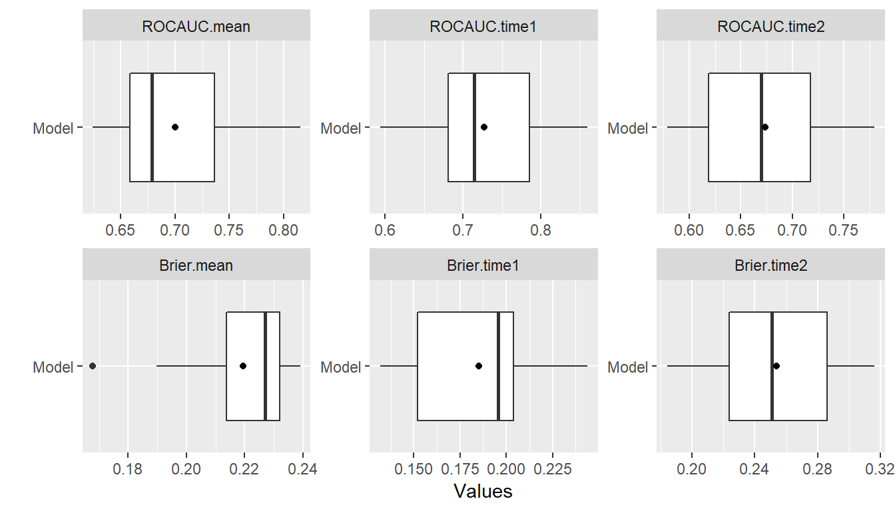
The summary function when applied directly to output from resample computes default performance metrics as described in the Performance Function section. Likewise, the metricinfo and performance functions can be applied to the output in order to list and compute applicable metrics.
## Resample-specific metrics
metricinfo(res_probs) %>% names
#> [1] "accuracy" "auc" "brier" "f_score" "fnr"
#> [6] "fpr" "kappa2" "npv" "ppv" "pr_auc"
#> [11] "precision" "recall" "roc_auc" "roc_index" "rpp"
#> [16] "sensitivity" "specificity" "tnr" "tpr"
## User-specified survival probability metrics
summary(performance(res_probs, metrics = c(sensitivity, specificity)))
#> Mean Median SD Min Max NA
#> sensitivity.mean 0.2433420 0.2455747 0.08327312 0.1309881 0.3992344 0
#> sensitivity.time1 0.2242094 0.2286585 0.13007156 0.0000000 0.5000000 0
#> sensitivity.time2 0.2624746 0.2404528 0.09444349 0.1262664 0.4489532 0
#> specificity.mean 0.9052404 0.9213255 0.06184367 0.7229870 0.9686275 0
#> specificity.time1 0.9423829 0.9372549 0.03467425 0.8660050 1.0000000 0
#> specificity.time2 0.8680980 0.8760562 0.09670937 0.5799691 1.0000000 0Stratified Resampling
Stratification of cases for the construction of resampled training and test sets can be employed to help achieve balance across the sets. Stratified resampling is automatically performed if variable specification is in terms of a traditional formula and will be done according to the response variable if a numeric vector or factor, the event variable if survival, and the first variable if a numeric matrix. For model frames and recipes, stratification variables must be defined explicitly with the strata argument to the ModelFrame constructor or with the "case_strata" role designation in a recipe step.
## Model frame with case status stratification
mf <- ModelFrame(surv_fo, data = surv_df, strata = status)
resample(mf, model = GBMModel)
## Recipe with case status stratification
rec <- recipe(time + status ~ ., data = surv_df) %>%
add_role(time, new_role = "surv_time") %>%
add_role(status, new_role = "surv_event") %>%
add_role(status, new_role = "case_strata")
resample(rec, model = GBMModel)Model Comparisons
Resampled metrics from different models can be combined for comparison with the Resamples function. Optional names given on the left hand side of equal operators within calls to Resamples will be used as labels in output from the summary and plot functions. For comparisons of resampled output, the same control structure must be used in all associated calls to resample to ensure that resulting model metrics are computed on the same resampled training and test sets.
## Resample estimation
res1 <- resample(surv_fo, data = surv_df, model = GBMModel(n.trees = 25),
control = surv_means_control)
res2 <- resample(surv_fo, data = surv_df, model = GBMModel(n.trees = 50),
control = surv_means_control)
res3 <- resample(surv_fo, data = surv_df, model = GBMModel(n.trees = 100),
control = surv_means_control)
## Combine resample output for comparison
(res <- Resamples(GBM1 = res1, GBM2 = res2, GBM3 = res3))
#> An object of class "Resamples"
#>
#> Models: GBM1, GBM2, GBM3
#> Stratification variable: (strata)
#>
#> An object from class "MLControl"
#>
#> Name: CVControl
#> Label: K-Fold Cross-Validation
#> Folds: 5
#> Repeats: 3
#> Seed: 123
summary(res)
#> , , CIndex
#>
#> Mean Median SD Min Max NA
#> GBM1 0.7122178 0.7014388 0.06433288 0.6289238 0.8386243 0
#> GBM2 0.7058983 0.6883562 0.06256998 0.6300000 0.8359788 0
#> GBM3 0.6941198 0.6762295 0.05933365 0.6244541 0.8227513 0
plot(res)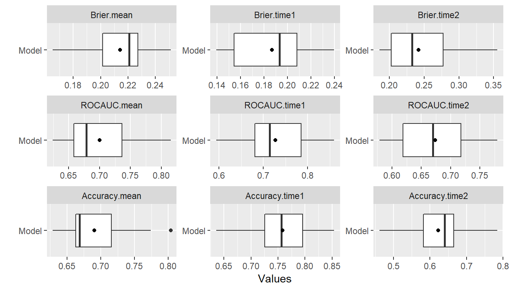
plot(res, type = "density")
plot(res, type = "errorbar")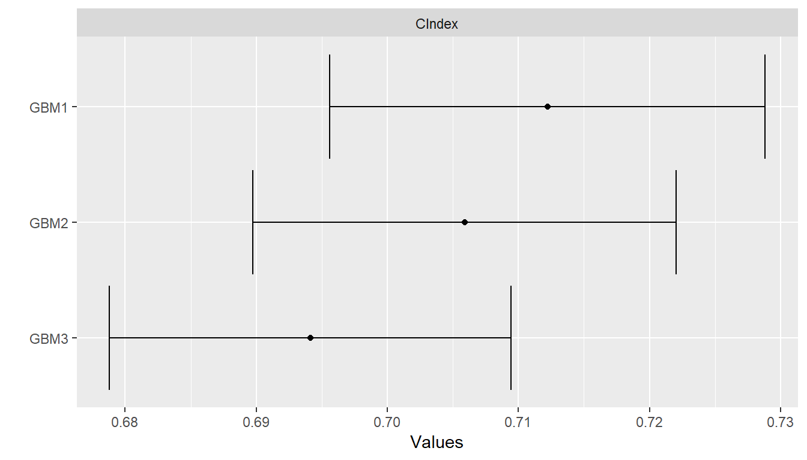
plot(res, type = "violin")
Pairwise model differences for each metric can be calculated with the diff function applied to results from a call to Resamples. The differences can be summarized descriptively with the summary and plot functions and assessed for statistical significance with the t.test function.
## Pairwise model comparisons
(perfdiff <- diff(res))
#> An object of class "PerformanceDiff"
#>
#> Metrics: CIndex
#> Models: GBM1 - GBM2, GBM1 - GBM3, GBM2 - GBM3
summary(perfdiff)
#> , , CIndex
#>
#> Mean Median SD Min Max NA
#> GBM1 - GBM2 0.006319491 0.004366812 0.01613621 -0.02494062 0.03881279 0
#> GBM1 - GBM3 0.018098015 0.019464720 0.02692342 -0.03026906 0.05479452 0
#> GBM2 - GBM3 0.011778524 0.015267176 0.01695738 -0.01793722 0.04449153 0
plot(perfdiff)
t.test(perfdiff)
#> An object of class "HTestPerformanceDiff"
#>
#> Upper diagonal: mean differences (row - column)
#> Lower diagonal: p-values
#> P-value adjustment method: holm
#>
#> , , CIndex
#>
#> GBM1 GBM2 GBM3
#> GBM1 NA 0.006319491 0.01809802
#> GBM2 0.15157114 NA 0.01177852
#> GBM3 0.05277722 0.052777218 NAPerformance Analyses
Variable Importance
The importance of variables in a model fit is estimated with the varimp function and plotted with plot. Variable importance is a measure of the relative importance of predictors in a model and has a default range of 0 to 100, where 0 denotes the least important variables and 100 the most.
## Predictor variable importance
(vi <- varimp(surv_fit))
#> Overall
#> thickness 100.00000
#> year 53.78039
#> age 50.98203
#> ulcer 20.00854
#> sex 0.00000
plot(vi)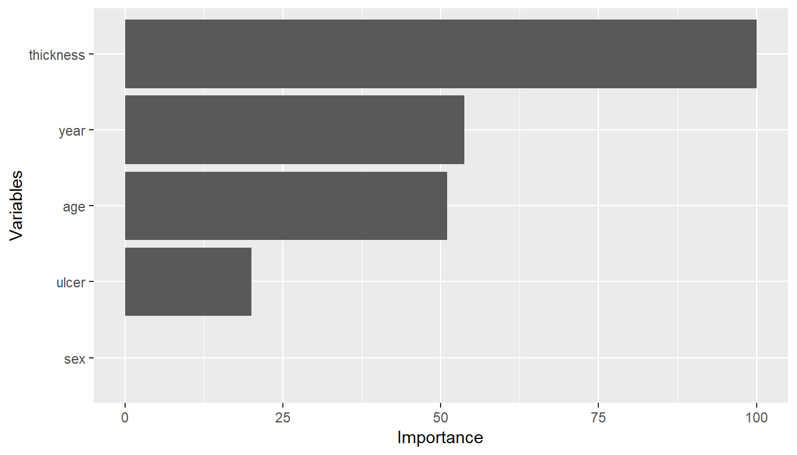
Calibration Curves
Agreement between model-predicted and observed values can be visualized with calibration curves. In the construction of these curves, cases are partitioned into bins according to their (resampled) predicted responses. Mean observed responses are then calculated within each of the bins and plotted on the vertical axis against the bin midpoints on the horizontal axis. An option to produce curves smoothed over the individual predicted values is also provided. Calibration curves that are close to the 45-degree line indicate close agreement between observed and predicted responses and a model that is said to be well calibrated.
## Binned calibration curves
cal <- calibration(res_probs, breaks = 10)
plot(cal, se = TRUE)
## Smoothed calibration curves
cal <- calibration(res_probs, breaks = NULL)
plot(cal)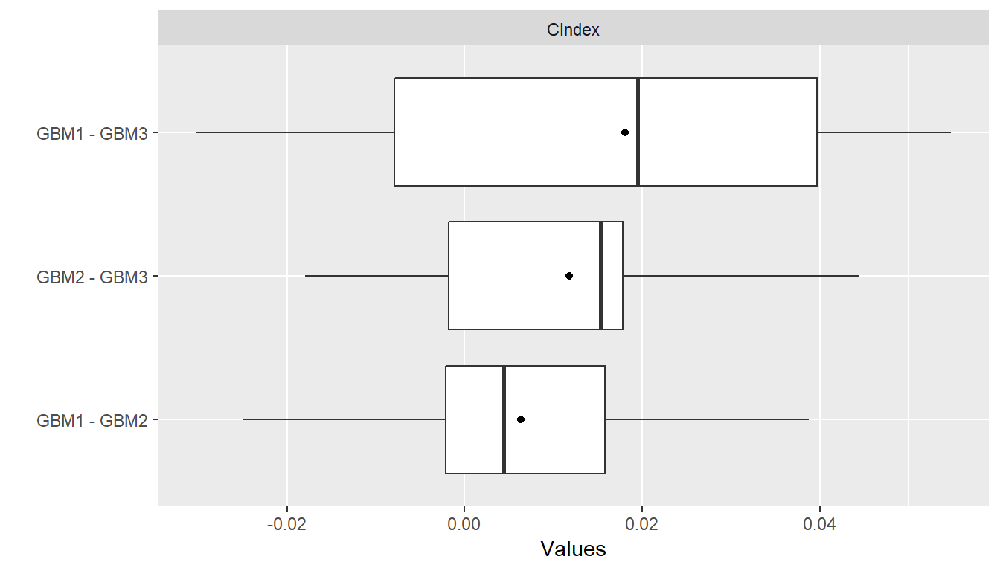
Confusion Matrices
Confusion matrices of cross-classified observed and predicted factor responses are available with the confusion function. They can be constructed with predicted class membership or with predicted class probabilities. In the latter case, predicted class membership is derived from predicted probabilities according to a probability cutoff value for binary factors and according to the class with highest probability for factors with more than two levels. Performance metrics, such as those described earlier for binary factors, can be computed with the performance function and summarized with summary and plot.
## Confusion matrices
(conf <- confusion(res_probs, cutoff = 0.5))
#> GBMModel.time1 :
#> Observed
#> Predicted 0 1
#> 0 848.89730 259.10270
#> 1 51.78571 70.21429
#>
#> GBMModel.time2 :
#> Observed
#> Predicted 0 1
#> 0 594.37262 403.62738
#> 1 88.68996 143.31004
performance(conf, metrics = c("Accuracy" = accuracy,
"Sensitivity" = sensitivity,
"Specificity" = specificity))
#> GBMModel.time1 :
#> Accuracy Sensitivity Specificity
#> 0.7472452 0.2132119 0.9425040
#>
#> GBMModel.time2 :
#> Accuracy Sensitivity Specificity
#> 0.5997420 0.2620227 0.8701584
summary(conf)
#> GBMModel.time1 :
#> Number of responses: 1230
#> Accuracy (SE): 0.7472452 (0.01239164)
#> Majority class: 0.7322626
#> Kappa: 0.1945668
#>
#> 0 1
#> Observed 0.7322626 0.26773739
#> Predicted 0.9008130 0.09918699
#> Agreement 0.6901604 0.05708479
#> Sensitivity 0.9425040 0.21321185
#> Specificity 0.2132119 0.94250395
#> PPV 0.7661528 0.57552693
#> NPV 0.5755269 0.76615280
#>
#> GBMModel.time2 :
#> Number of responses: 1230
#> Accuracy (SE): 0.599742 (0.01397011)
#> Majority class: 0.5553354
#> Kappa: 0.1402268
#>
#> 0 1
#> Observed 0.5553354 0.4446646
#> Predicted 0.8113821 0.1886179
#> Agreement 0.4832298 0.1165122
#> Sensitivity 0.8701584 0.2620227
#> Specificity 0.2620227 0.8701584
#> PPV 0.5955637 0.6177157
#> NPV 0.6177157 0.5955637plot(conf)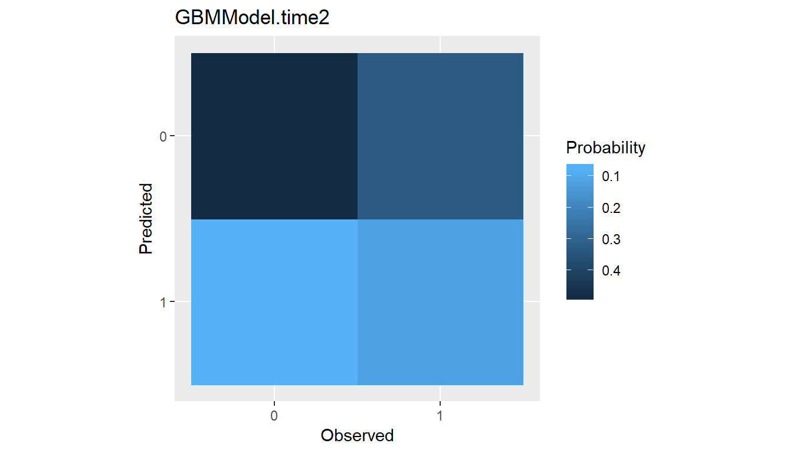
Partial Dependence Plots
Partial dependence plots display the marginal effects of predictors on the response variable. The response scale displayed in the plots will depend on the response type: probability for factors and predicted survival probabilities, original scale for numerics, and survival time for predicted survival means.
## Partial dependence plots
pd <- dependence(surv_fit, select = c(thickness, age))
plot(pd)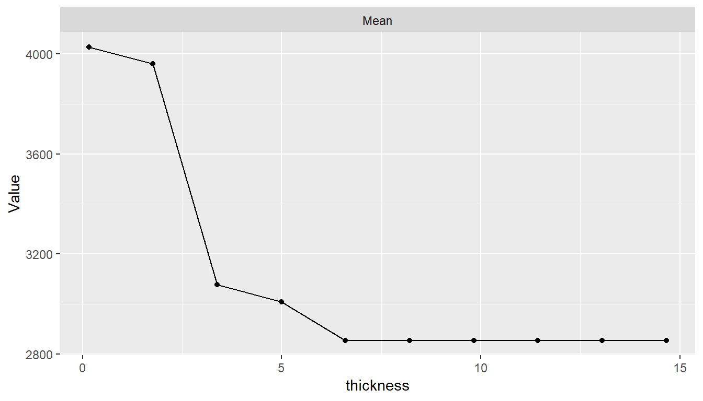
Performance Curves
Tradeoffs between correct and incorrect classifications of binary outcomes, across the range of possible cutoff probabilities, can be studied with performance curves.
ROC
Receiver operating characteristic (ROC) curves are one example in which true positive rates (sensitivity) are plotted against false positive rates (1 - specificity). Area under resulting ROC curves can be computed as an overall measure of model predictive performance and interpreted as the probability that a randomly selected event case will have a higher predicted value than a randomly selected non-event case.
## ROC curves
roc <- performance_curve(res_probs)
plot(roc, diagonal = TRUE)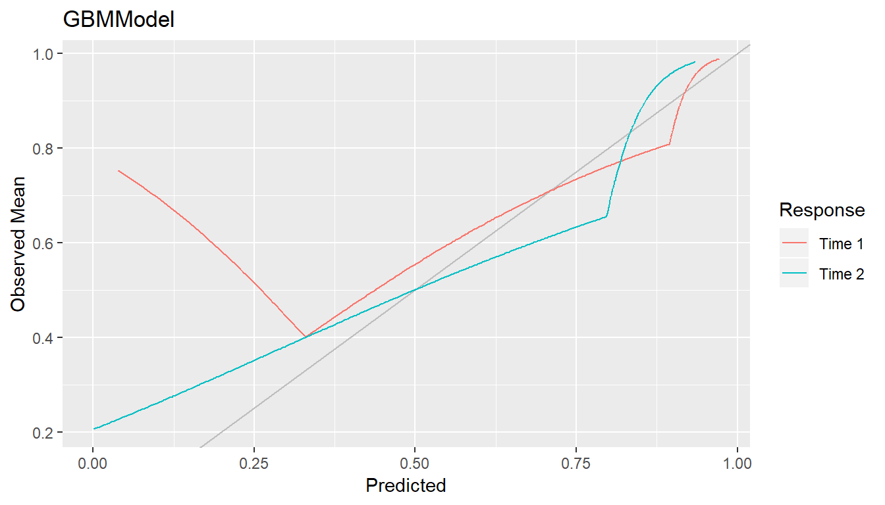
plot(roc, type = "cutoffs")
auc(roc)
#> Model: GBMModel.time1
#> [1] 0.7209396
#> --------------------------------------------------------
#> Model: GBMModel.time2
#> [1] 0.6683252Precision Recall
In general, any two binary response metrics may be specified for the construction of a performance curve. Precision recall curves are another example.
## Precision recall curves
pr <- performance_curve(res_probs, metrics = c(precision, recall))
plot(pr)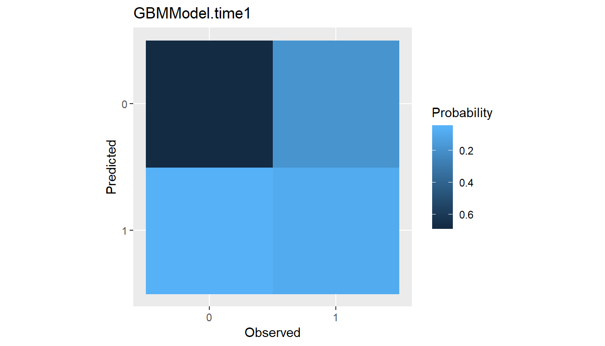
auc(pr)
#> Model: GBMModel.time1
#> [1] 0.4343253
#> --------------------------------------------------------
#> Model: GBMModel.time2
#> [1] 0.5826389Lift
Lift curves depict the rate at which observed binary responses are identifiable from (resampled) predicted response probabilities. In particular, they plot the true positive findings (sensitivity) against the positive test rates for all possible classification probability cutoffs. Accordingly, a lift curve can be interpreted as the rate at which positive responses are found as a function of the positive test rate among cases.
## Lift curves
lf <- lift(res_probs)
plot(lf, find = 0.75)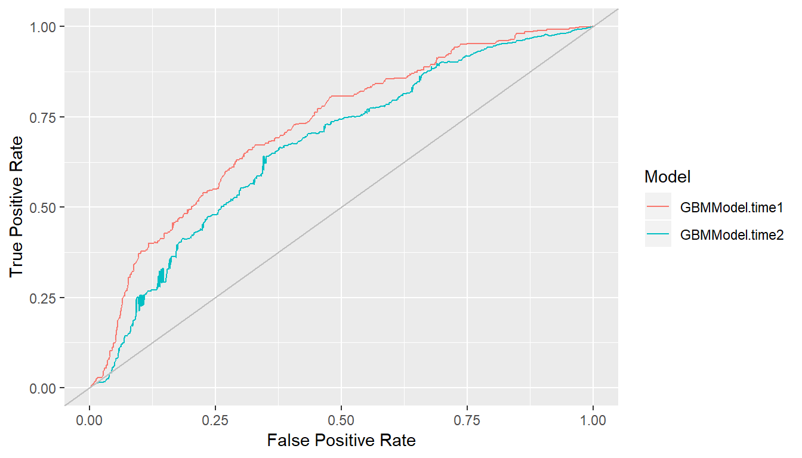
Modeling Strategies
Model Tuning
Many of the modeling functions have arguments, or parameters, that control aspects of their model fitting algorithms. For example, GBMModel parameters n.trees and interaction.depth control the number of decision trees to fit and the maximum depth of variable interactions. The tune function performs model fitting over a grid of parameter values and returns the model with the most optimal values. Optimality is determined based on the first performance metric supplied to the metrics argument of tune. Furthermore, argument grid controls the construction of grid values and can be a single numeric value giving the grid length in each parameter dimension, a call to Grid with the grid length and number of grid points to sample at random, or a user-specified data frame of grid points. Summary statistics and plots of resulting performances across all metrics and tuning parameters can be obtained with the summary and plot functions.
## Tune over automatic grid of model parameters
(surv_tune <- tune(surv_fo, data = surv_df, model = GBMModel,
grid = 3,
control = surv_means_control,
metrics = c("CIndex" = cindex, "RMSE" = rmse)))
#> An object of class "MLModelTune"
#>
#> Model name: GBMModel
#> Label: Generalized Boosted Regression
#> Packages: gbm
#> Response types: factor, numeric, Surv
#>
#> Parameters:
#> $n.trees
#> [1] 50
#>
#> $interaction.depth
#> [1] 1
#>
#> $n.minobsinnode
#> [1] 10
#>
#> $shrinkage
#> [1] 0.1
#>
#> $bag.fraction
#> [1] 0.5
#>
#> Grid:
#> n.trees interaction.depth
#> 1 50 1
#> 2 100 1
#> 3 150 1
#> 4 50 2
#> 5 100 2
#> 6 150 2
#> 7 50 3
#> 8 100 3
#> 9 150 3
#>
#> An object of class "Performance"
#>
#> Metrics: CIndex, RMSE
#> Models: GBMModel.1, GBMModel.2, GBMModel.3, GBMModel.4, GBMModel.5, GBMModel.6, GBMModel.7, GBMModel.8, GBMModel.9
#>
#> Selected (CIndex): GBMModel.1
summary(surv_tune)
#> , , CIndex
#>
#> Mean Median SD Min Max NA
#> GBMModel.1 0.7058983 0.6883562 0.06256998 0.6300000 0.8359788 0
#> GBMModel.2 0.6941198 0.6762295 0.05933365 0.6244541 0.8227513 0
#> GBMModel.3 0.6850918 0.6745843 0.06864062 0.5805085 0.8174603 0
#> GBMModel.4 0.6961474 0.6886792 0.05489630 0.6207627 0.8028504 0
#> GBMModel.5 0.6828937 0.6792453 0.06191098 0.5677966 0.8015873 0
#> GBMModel.6 0.6785267 0.6933962 0.06486174 0.5868644 0.7885986 0
#> GBMModel.7 0.6925677 0.6721311 0.05600214 0.6165254 0.8004751 0
#> GBMModel.8 0.6778869 0.6650943 0.05688398 0.5889831 0.7838480 0
#> GBMModel.9 0.6709213 0.6745283 0.06440546 0.5805085 0.8028504 0
#>
#> , , RMSE
#>
#> Mean Median SD Min Max NA
#> GBMModel.1 2641.262 2647.588 329.4775 2015.310 3229.041 0
#> GBMModel.2 2729.431 2716.819 351.6683 2099.813 3260.165 0
#> GBMModel.3 2762.201 2721.302 388.5256 2059.193 3346.956 0
#> GBMModel.4 2739.729 2737.601 356.4921 2010.709 3245.199 0
#> GBMModel.5 2862.102 2903.612 391.1429 2132.708 3533.432 0
#> GBMModel.6 2933.915 2954.276 392.4251 2096.266 3482.183 0
#> GBMModel.7 2803.999 2830.390 350.3109 2026.888 3290.263 0
#> GBMModel.8 2976.085 3023.242 382.5607 2184.120 3517.882 0
#> GBMModel.9 3075.965 3143.521 413.9979 2161.720 3668.848 0
plot(surv_tune, type = "line")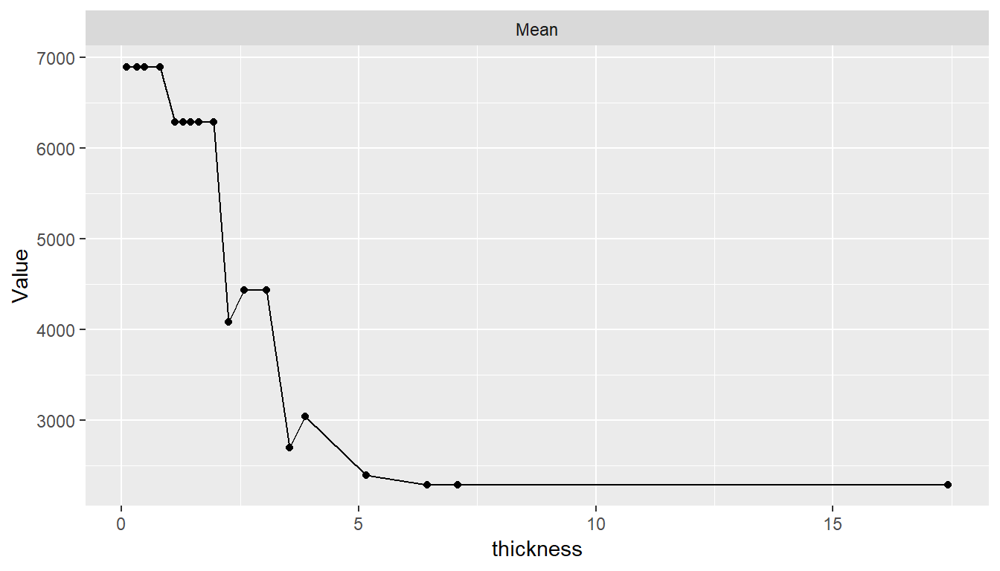
## Tune over randomly sampled grid points
tune(surv_fo, data = surv_df, model = GBMModel,
grid = Grid(length = 100, random = 10),
control = surv_means_control)
## Tune over user-specified grid points
tune(surv_fo, data = surv_df, model = GBMModel,
grid = expand.grid(n.trees = c(25, 50, 100),
interaction.depth = 1:3),
control = surv_means_control)The return value of tune is a model object with the optimal tuning parameters and not a model fit object. The returned model can be fit subsequently to a set of data with the fit function.
## Fit the tuned model
surv_fit <- fit(surv_fo, data = surv_df, model = surv_tune)
(vi <- varimp(surv_fit))
#> Overall
#> thickness 100.00000
#> age 66.54478
#> ulcer 34.04836
#> year 12.62582
#> sex 0.00000Model Selection
Model selection can be performed with the tune function to select from any combination of models and model parameters. It has as a special case the just-discussed tuning of a single model over a grid of parameter values. In general, a list containing any combination of model functions, function names, and function calls can be supplied to the models argument of tune to perform model selection. An expand.model helper function is additionally provided to expand a model over a grid of tuning parameters for inclusion in the list if so desired. In this general form of model selection, the grid argument discussed previously for grid tuning is not used.
## Select from a list of candidate models
model_list <- c(
expand.model(GBMModel, n.trees = c(50, 100), interaction.depth = 1:2),
GLMNetModel(lambda = 0.01),
CoxModel,
SurvRegModel
)
tune(surv_fo, data = surv_df, models = model_list,
control = surv_means_control)Ensemble Models
Ensemble methods combine multiple base learning algorithms as a strategy to improve predictive performance. Two ensemble methods implemented in Machineshop are stacked regression (Breiman 1996) and super learners (Lann and Hubbard 2007). Stacked regression fits a linear combination of resampled predictions from specified base learners; whereas, super learners fit a specified model, such as GBMModel, to the base learner predictions and optionally also to the original predictor variables. Illustrated below is a performance evaluation of stacked regression and a super learner fit to gradient boosted, random forest, and Cox regression base learners. In the second case, a separate gradient boosted model is used as the super learner.
## Stacked regression
stackedmodel <- StackedModel(GLMBoostModel, CForestModel, CoxModel)
res_stacked <- resample(surv_fo, data = surv_df, model = stackedmodel)
summary(res_stacked)
#> Mean Median SD Min Max NA
#> CIndex 0.6960906 0.7205175 0.1134739 0.48 0.8378378 0
## Super learner
supermodel <- SuperModel(GLMBoostModel, CForestModel, CoxModel,
model = GBMModel)
res_super <- resample(surv_fo, data = surv_df, model = supermodel)
summary(res_super)
#> Mean Median SD Min Max NA
#> CIndex 0.707372 0.6994528 0.1068744 0.468254 0.845 0Package Extensions
Custom models and metrics can be defined with the MLModel and MLMetric constructors for use with the model fitting, prediction, and performance assessment tools provided by the package.
## Logistic regression model
LogisticModel <- MLModel(
name = "LogisticModel",
types = "binary",
fit = function(formula, data, weights, ...) {
glm(formula, data = data, weights = weights, family = binomial, ...)
},
predict = function(object, newdata, ...) {
predict(object, newdata = newdata, type = "response")
},
varimp = function(object, ...) {
pchisq(coef(object)^2 / diag(vcov(object)), 1)
}
)
## F2 score metric
f2_score <- MLMetric(
function(observed, predicted, ...) {
f_score(observed, predicted, beta = 2, ...)
},
name = "f2_score",
label = "F2 Score",
maximize = TRUE
)
library(MASS)
res <- resample(type ~ ., data = Pima.tr, model = LogisticModel)
summary(performance(res, metric = f2_score))
#> Mean Median SD Min Max NA
#> f2_score 0.5697769 0.6060606 0.1924873 0.1666667 0.8571429 0References
Andersen, PK, O Borgan, RD Gill, and N Keiding. 1993. Statistical Models Based on Counting Processes. New York: Springer.
Bache, Stefan Milton, and Hadley Wickham. 2014. Magrittr: A Forward-Pipe Operator for R. https://CRAN.R-project.org/package=magrittr.
Breiman, L. 1996. “Stacked Regression.” Machine Learning 24: 49–64.
Corporation, Microsoft, and Steve Weston. 2018. DoParallel: Foreach Parallel Adaptor for the ’Parallel’ Package. https://CRAN.R-project.org/package=doParallel.
Graf, E, C Schmoor, W Sauerbrei, and M Schumacher. 1999. “Assessment and Comparison of Prognostic Classification Schemes for Survival Data.” Statistics in Medicine 18 (17–18): 2529–45.
Harrell, FE, RM Califf, DB Pryor, KL Lee, and RA Rosati. 1982. “Evaluating the Yield of Medical Tests.” JAMA 247 (18): 2543–6.
Heagerty, PJ, T Lumley, and MS Pepe. 2004. “Time-Dependent Roc Curves for Censored Survival Data and a Diagnostic Marker.” Biometrics 56 (2): 337–44.
Kuhn, Max, and Hadley Wickham. 2018. Recipes: Preprocessing Tools to Create Design Matrices. https://CRAN.R-project.org/package=recipes.
Lann, MJ van der, and AE Hubbard. 2007. “Super Learner.” Statistical Applications in Genetics and Molecular Biology 6 (1).
Microsoft, and Steve Weston. 2017. Foreach: Provides Foreach Looping Construct for R. https://CRAN.R-project.org/package=foreach.
Perkins, Neil J., and Enrique F. Schisterman. 2006. “The Inconsistency of "Optimal" Cutpoints Obtained Using Two Criteria Based on the Receiver Operating Characteristic Curve.” American Journal of Epidemiology 163 (7): 670–75.
Youden, WJ. 1950. “Index for Rating Diagnostic Tests.” Cancer 3 (1): 32–35.